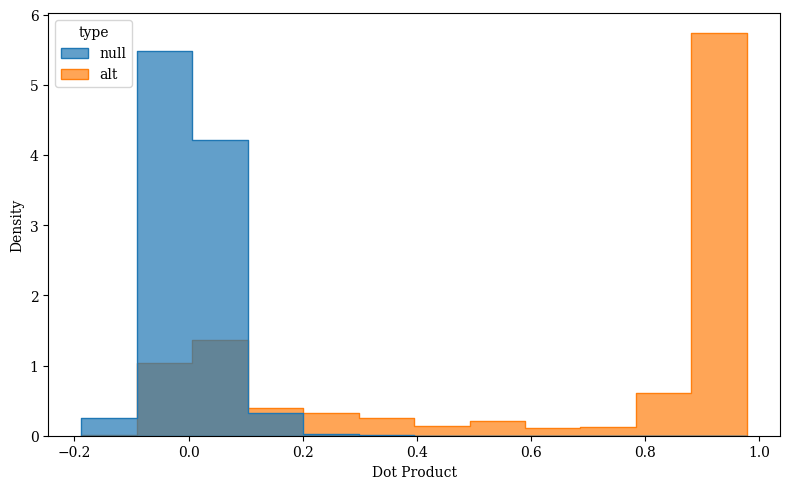
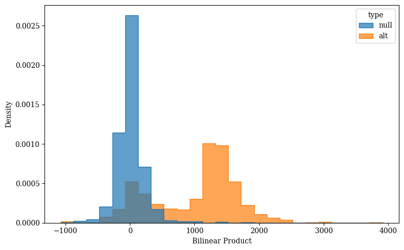
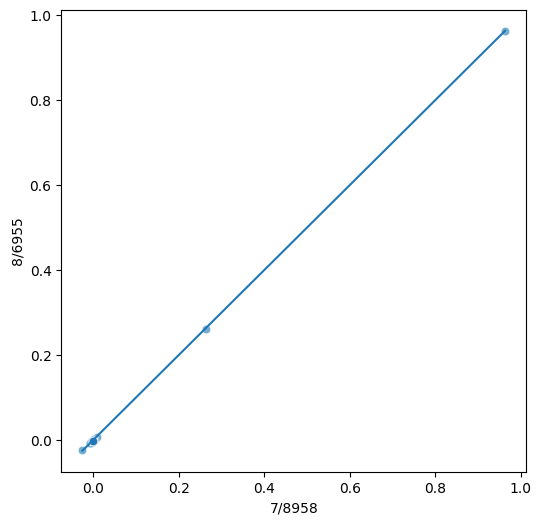
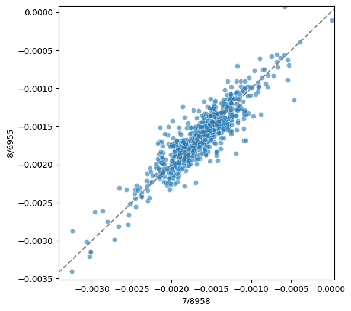
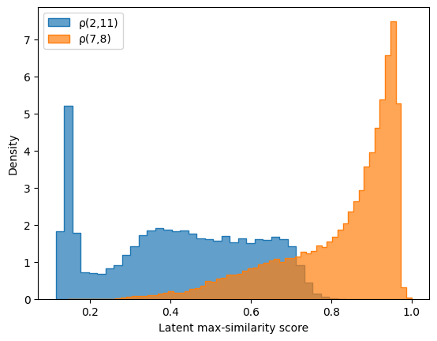
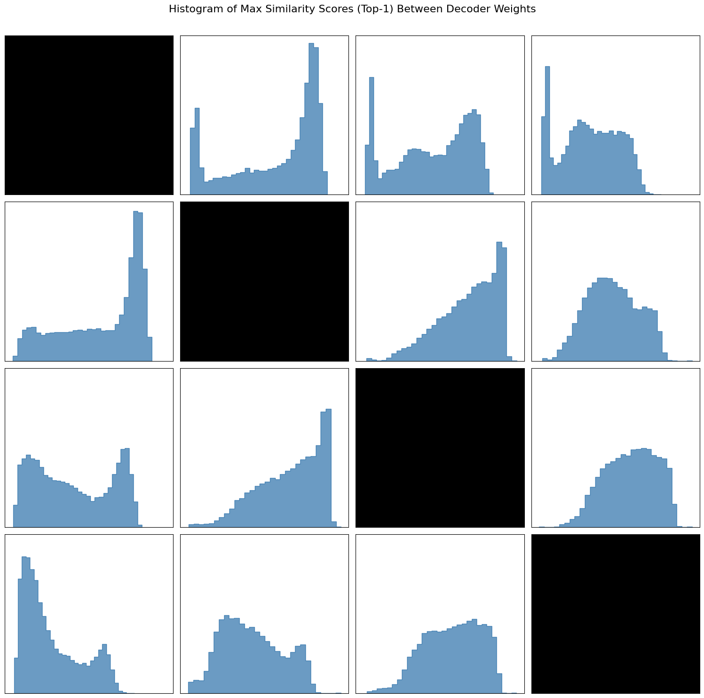
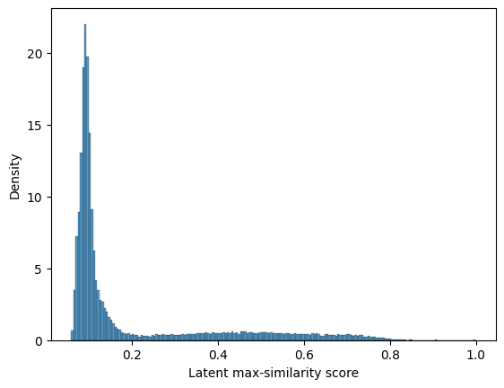

Finding features that persist across layers and models
Introduction
In statistical prediction settings, it’s known that the best models are the ones with the most important features, rather than the most complicated architectures. Choosing good features for your prediction model can be easy, thanks to regularization techniques and the expressiveness of deep architectures.
But while feature engineering has become an abandoned art, feature awareness is still crucial. In the race to understand the computational paths taken by a transformer in computing a next-token prediction, mechanistic interpretability researchers have put effort into extracting concept subspaces within the intermediate representations of these transformer architectures. In particular, the technique of fitting sparse coders to these internal layer activations has allowed for obtaining explainable neurons, which typically do not exist in transformers thanks to the phenomenon of superposition.
In working on classifiers based on natural language, I’ve become interested in how neural classifiers can be compared with each other. Since my work has primarily been focused on clinical text (e.g. discharge summaries) and clinical outcomes (e.g. 30-day mortality), I’ll narrate my motivation through the lens of the healthcare domain, which I consider to be a high-stakes setting for interpretability performance. If I have two models for patient mortality prediction, one developed from fine-tuning transformer A on Dataset 1, and another developed from fine-tuning transformer B on Dataset 2, how can I compare these two models, ultimately to figure out which one has more signal-based computational processes, performs more robustly, and understands more reasons for death?
If I had used two statistical models instead of two transformer models, this comparison would be easy. I could first compare the feature sets used by my models (e.g. patient age, number of diagnoses, length of stay) and then, for overlapping features, compare the coefficients being used. There are methods available for defining and sometimes visualizing the regions of disagreement between these two models.
Thanks to sparse coding algorithms for transformer interpretability, we now have a toolkit for comparing two models based on the features that they use in prediction. Off the bat, this is still a difficult problem because obtaining the features that are intrinsic to a trained architecture requires 1) obtaining a large, comprehensive set of example texts with activations, 2) choosing a layer or layers within the model to focus on, and 3) training a sparse crosscoder using that dataset and those layers. Assuming this has already been done for both models (separately), there’s no obvious way to compare the feature sets of the two models.
In this technical blog post, I outline my thought process for this problem, starting with the much more basic question of finding a set of features that are shared between two residual stream layers of the same transformer model. There are some interesting results from just looking at gpt-2 small, for which residual stream SAE’s have already been trained and made available through the SAELens library.
Similarity in decoder weights
Each attention block and MLP block transforms its input, but because of the residual connection between these blocks, it’s intuitively possible that if one feature persists between two layers, it will manifest in the same subspace between them. I don’t have a formal reasoning for why this necessarily will be the case, but I believe that it can be the case. Consider the (unrealistic) example in which one feature emerges in layer L of the model but does not superimpose with any other feature. Imagine that we discover it through a decoder vector of \(a \vec e_i + b \vec e_j + c \vec e_k\), where \(a,b,c\) are arbitrary reals and \(i,j,k\) are arbitrary integers. If the attention block and MLP block of layer L+1 both somehow do not write to indices \(i,j,k\) of the residual stream, then we can expect this feature to recur in layer \(L+1\), and with the same decoder vector.
Again, this reasoning is meant to motivate a hypothesis rather than prove a method. An empirical validation comes from checking the dot products of correlated features, and comparing this distribution to that of a simulated set of randomly-chosen feature pairs. There’s a clear separation between the two distributions, suggesting that we can hopefully identify recurring features without even needing to obtain activations.

I hypothesized that two instances of a recurrent feature would have a high dot product when projected into the unembedding space (e.g. logit vectors), and for that reason I also obtained the distribution of bilinear products \(v_1 W_U W_U^T v_2\), which again seem to be separated, but not as much as the dot product distributions.

The natural application is to replace my 1st approach for discovering recurring features (high correlation on activation sets) with a decoder weights similarity search. The advantage of not using activations is that we don’t have to worry about bias (e.g. using a dataset that only represents a certain set of concepts, e.g. the IMDb dataset) or the computational bottleneck of performing inference over a large dataset and two relatively-large models.
If our two decoder matrices are \(D_1\) and \(D_2\) (where each row is a decoder vector), we’re effectively searching for the largest elements in \(D_1 D_2^T\). Computing \(D_1 D_2^T\) is not necessary here, as computational shortcuts exist for finding vector pairs of high similarity. I opted to use FAISS [https://github.com/facebookresearch/faiss] from Facebook AI Research, which reduces the number of operations needed for this task by first grouping all the vectors in one dataset (matrix) into clusters, then only computing similarity scores between a vector and the ones in the nearest cluster.
Results are a mixed-bag. The largest similarity score was between 2/9515 and 11/17596. The autointerps are respectively words related to organization and realization and phrases related to utilizing tools or resources. Upon inspection of the frequently activating keywords, these autointerps are incorrect. Both features are moderately-strong detectors of British English being used.
- 2/9515 activating keywords
- organisation
- realise
- recognised
- emphasising
- 11/17596
- manoeuvure
- utilising
- focussed
- armour
- 999 (this is the emergency phone number in the UK, as well as many other countries in the old British commonwealth)
- sceptical
Interestingly, this feature pair did not have a correlation greater than 0.9, even though it is (in my opinion) a pretty good example of a recurring feature.
The second most similar feature pair was 2/21514 and 11/1652; these features respectively have activation densities of 5.6% and 4.0%, and don’t have any legitimate interpretations. They do share a most-activating token, which is a string of special characters âĢİ. Spooky. This feature pair also was not discovered by activation correlation.
The third most similar feature pair was 2/5186 and 11/5362, which are the word Wilson with varying levels of specificity and the word Wilson in various contexts. This one makes a lot more sense, and also was discovered by activation correlation (0.954). Again, the later feature is smarter, as evidenced by only it activating on Seahawks Quarterback Russell.
It’s useful to see just how close two features can be. Between layers 2 and 11, the largest similarity was 0.8362. If we investigate (e.g.) layers 7 and 8, can we find the same feature in both layers?
The answer turns out to be: yes, there are several features that seem to be exactly preserved between layers, and it’s quite a good sign that separately trained SAE’s find the same subspace here. Here I display a scatterplot of the decoder weights for 7/8598 and 8/6955, which have a similarity metric of 1.0000. These features are both activated on <|endoftext|>.


Interestingly, there seem to be multiple features in layers 7 and 8 that activate on <|endoftext|>, and all of them seem to have roughly the same decoder weights (similarity score of 1.0).
Visualizing Representation Comparison
NB: As I drift from comparing different layers within the same model to comparing different layers of different models, I’m going to generalize to the idea of comparing neural representations.
We saw a lot of features copied from layers 7 to 8, and not a lot between layers 2 and 11. This makes sense, as layers 2 and 11 should be much different as representations than layers 7 and 8. It would be useful to have a similarity metric between two representations that expresses how different their featurizations are. This ties back to the original ideal of this project, which is to have a method that quantifies the similarity between two transformer computational graphs, based on the features they both identify (making the rather strong assumption, at least within our scope, that both of these representations have sparse replacement models available).
A first-pass at visualizing the similarity between two layers is to obtain, for each latent in one layer, the largest similarity score with any latent in the other layer. Mathematically, if \(W_{d,L_1}\) and \(W_{d,L_2}\) are the decoder matrices (in $^{F x D_H}, where each row is a feature, define
\[ \rho_{L_1, L_2} (i) = max_{j \in |F|} W_{d,1}[i,:]^T W_{d,2}[j,:] \]
If \(\rho_{L_1, L_2} (i)\) is high for all \(i \in |F|\), we can comfortably say that \(L_1\) and \(L_2\) share similar featurizations. We can display the vector \(\vec \rho(L_1, L_2) = (\rho_{L_1, L_2} (1)... \rho_{L_1, L_2} (F))\)

Here, I plot the \(\rho\) vectors between layers 1, 5, 8, and 11, blacking out the diagonal because it is obviously just 1.

Model diffing with decoder weights
Overall, I like the decoder-weights approach a lot more for finding persistent features within a model, but there’s no obvious way to translate it for different residual streams. One application is to focus on two different models that originate from the same base model, in the hopes that the residual streams are similar enough that the same feature in both models would occupy similar subspaces. This is a core component of model diffing, which Anthropic has already briefly used in order to show differences between base and fine-tuned models. I think their work on this is quite exciting but somewhat limited to feature exploration, whereas I’m more interested in directly comparing models by understanding the features that they use.
At this point, it’s important to recall that autointerp/activation tracking has been central to verifying that two features really are the same, and for that I credit Neuronpedia and all the SAE trainers who have populated it. For the next step in this blog, I’ll need to diff two models that originate from the same base model, and they’ll both need to already have SAE’s. The pretrained SAE’s library in sae lens is quite extensive, although I believe that the only pair of models here originating from the same base are Base Llama-3-8b and Deepseek-R1-distilled Llama-3-8b. Respectively, residual stream layers 18 and 25 are available, so I visualize the feature relationships here.

Next steps
I meant for this to be a longer blog post that culminated in a proposed methodology for model/representation comparison with sparse-coded feature weights. I thought it would make sense to put these explorations and thought experiments into an earlier (first) technical blog post, then later update it with new results once I’ve trained a pair of good SAE’s based on the language models I’m using.
I’m primarily interested in an approach that is empirically verifiable, which (to me) means that I can set up toy experiments with small transformers where the feature similarity is either analytically tractable, or a good hypothesis can be made as to what they’ll be. An even earlier pass would be to build off the work of Toy Models of Superposition, since the transformer architecture itself can be ignored to start.